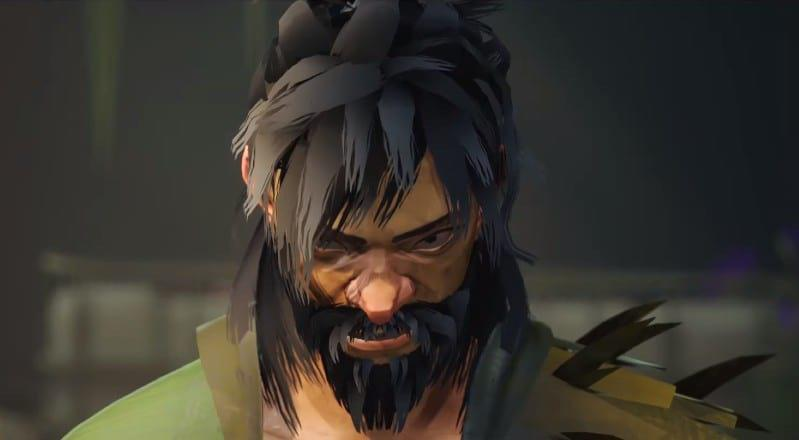

Fajar Phase 1
He is the trickiest enemy you’ve faced so far with his confusing combos and high/low mix-ups. Beating him will take a lot of tries but here are a few tips to get through his first phase.
His first attack can always be consistent.
When at a medium distance he will always go for two successive kicks, learn the timing and you can dodge out of anything after.
Throwing him when directly next to a hip-height structure will knock him down.
Chase him if the animation doesn’t trigger and manually knock him down.
His attack string after blocking is consistent and safe.
He will either finish the string early and move away or always go for a middle attack, this pattern is easy to learn and will be highly beneficial once you’ve learned its timings.
Get space between you and him and bait him to do a jumping attack on specific areas.
Run far enough and hug these specific plant boxes, taunting is optional. He doesn’t seem to do this in succession so wait for an attack from him first before doing so.
Don’t have a plant box positioned between you and him as it triggers an unpredictable special attack.
Jump the plant boxes as a panic button to create distance.
Opening combo.
This is a sample opening combo after dodging his first kick. You may not have the same unlocked skills as me so your combo might be different
Fajar Phase 2
Now he has transported you to an area different from the squats, here he’ll be surprising you from the bushes, command bamboo stalks when you’re pushed back, and have the same machete he used to kill you with all those years back. Time to pay back the favor.
Grab a stick to prevent chip damage.
There are several sticks lying around the area, you may even break small bamboo structures to get a stick.
His machete attacks are highly telegraphed.
His machete attacks always have a consistent rhythm to them, deflect these to add to his structure meter or avoid when you need to regain yours.
Dodge after he uses his machete.
He has special attacks that are a 50/50, you may learn them but dodging them is an option that completely removes the need to guess the 50/50.
It is safer to avoid his attack when he jumps in from the bamboo stalks. Knock him down after
Use your Focus Bar when you have a high structure gauge or when you need space to breathe.
Sample Fajar Fight
The fight is generally hard and challenging, as will the rest of the bosses, but using the tips listed above can make your fight against him more consistent to execute.